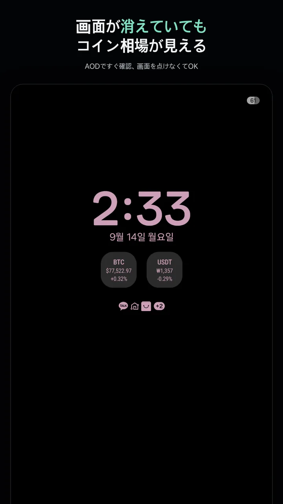
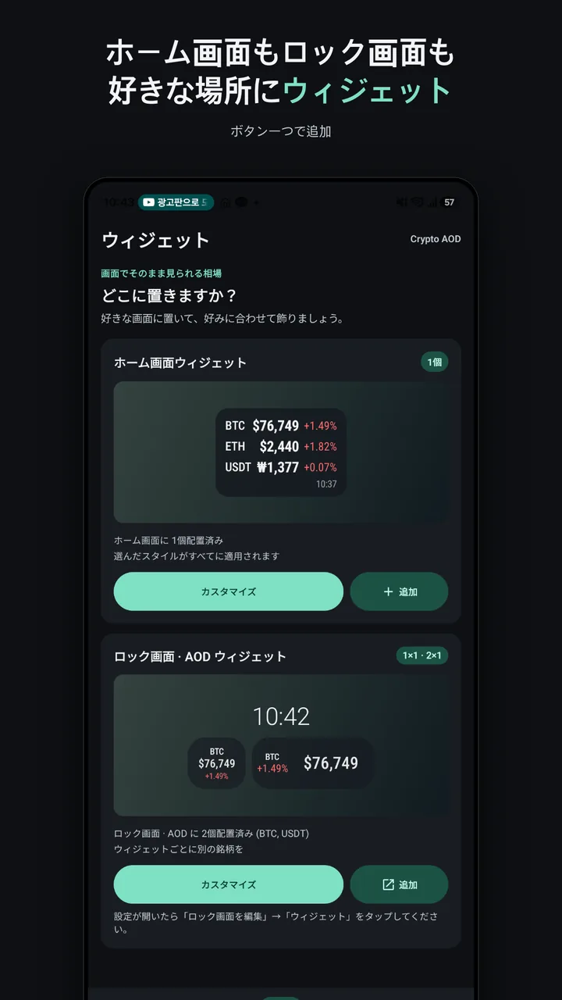
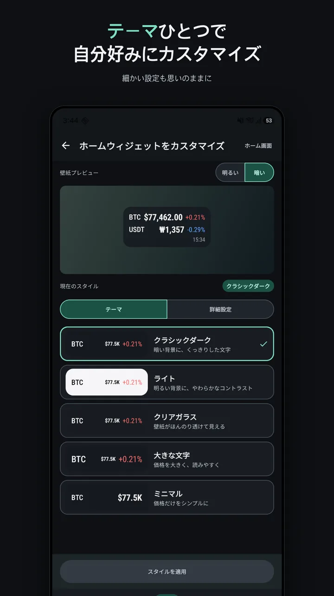
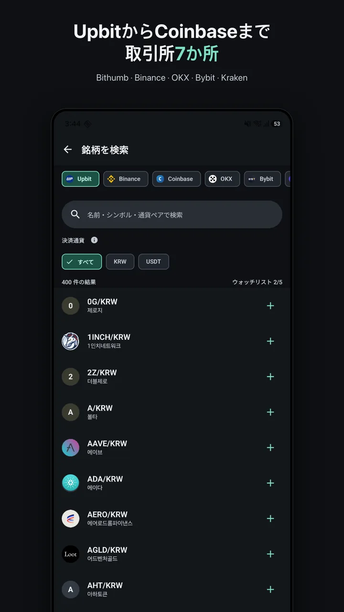
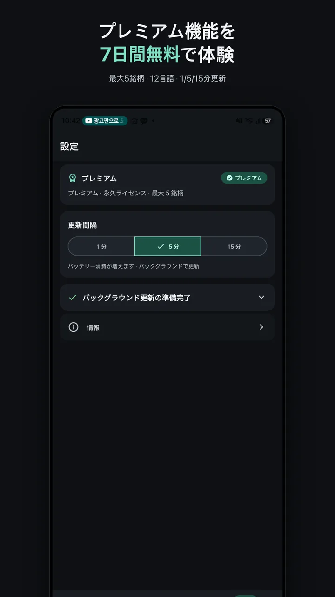

AOD・ロック画面
- 1×1・2×1ウィジェット、1つに1銘柄
- 画面オフのあいだも更新を継続
- 更新に失敗しても最後の価格と時刻を表示
Galaxy専用
画面が消えていても、ビットコインやイーサリアムの価格がひと目でわかります。ロック解除も、アプリを開く必要もありません。

銘柄を追加：7つの取引所から選び、名前やシンボルで検索します。
ウィジェットを配置：ロック画面・AOD（設定 → ロック画面とAOD → ロック画面を編集 → ウィジェット）、またはホーム画面に置きます。
更新間隔を選択：1分・5分・15分。ウィジェットをタップするとすぐに更新されます。
ロック画面・AODウィジェットはOne UI 7以降のGalaxyで使えます。ほかのAndroidスマホではホーム画面ウィジェットのみです。




買い切り・サブスクなし
画面オフでも見える仮想通貨の価格。ロック画面・AOD・ホーム画面ウィジェット。